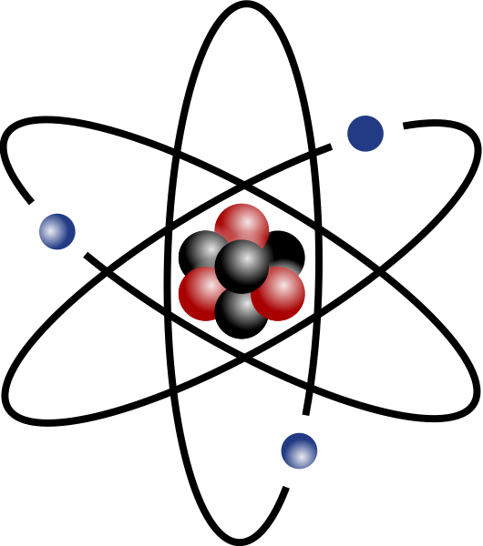
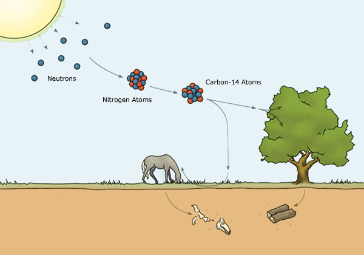
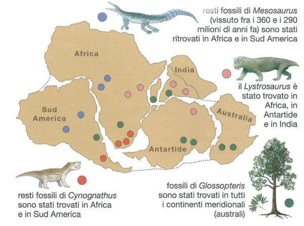
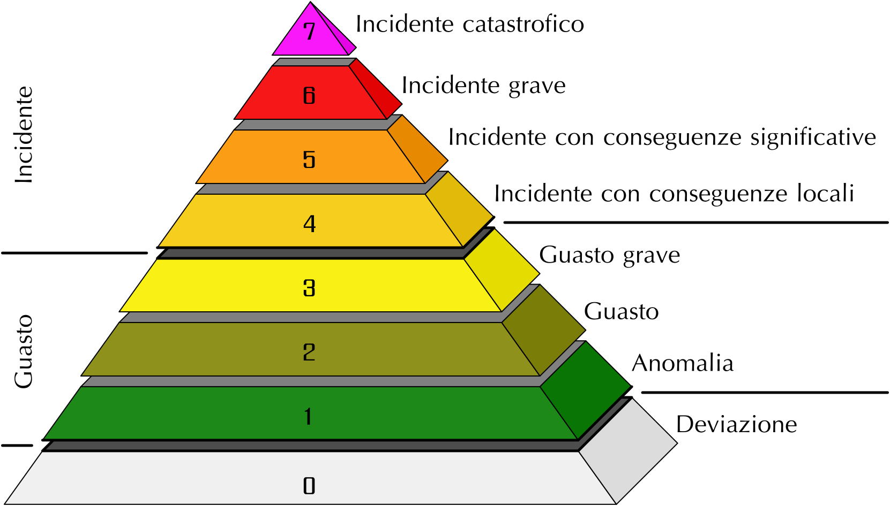

Istituto di istruzione superiore G. Capellini N. Sauro
Elaborato concernente le discipline d’indirizzo
Elaborato concernente le discipline d’indirizzo
IL DECADIMENTO RADIOATTIVO
Esame di stato 2020-2021
Francesco De Lucchini
Classe 5DLs
Francesco De Lucchini
Classe 5DLs

Introduzione



Forze nucleari

Interazione nucleare forte e stabilità dei nuclei


Decadimento radioattivo
Dimostrazione:

La formula può essere scritta nei termini di 𝜏, vita media del radionuclide, definita
come l’inverso della costante di decadimento 1⁄𝜆


Studio della funzione del decadimento radioattivo
 Dominio: ∀𝑥∈ℝ
Dominio: ∀𝑥∈ℝ
Intersezioni con gli assi: Asse delle y in (0, 4)
Segni: 𝑓(𝑥) > 0 ∀𝑥∈ℝ
Asintoti: Un asintoto orizzontale di eq. y=0 per 𝑥→+∞
Massimi e minimi: Nessuno
Flessi: Nessuno

Integrale della funzione del decadimento radioattivo


Studio di una funzione con modulo
 Dominio: ∀𝑥∈ℝ
Dominio: ∀𝑥∈ℝ
Intersezioni con gli assi: Asse delle x in (3, 0), Asse delle y in (0, 3)
Segni: 𝑓(𝑥) > 0 ∀𝑥∈ℝ
Asintoti: Un asintoto orizzontale di eq. y=0 per 𝑥→-∞
Massimi e minimi: Massimo in (2, 7.389), Minimo in (3, 0)
Flessi: Flesso in (1, 5.437)
Mostra passaggi

Studio di una funzione con modulo con passaggi

Asintoti orizzontali
 Asintoti obliqui
Asintoti obliqui

Asintoti obliqui
Massimi e minimi

Mostra procedimento

Flessi

Mostra procedimento
Studio di una funzione parametrica
 Nessuna soluzione per 𝑘 < 0
Nessuna soluzione per 𝑘 < 0
Una soluzione per 𝑘 = 0
Tre soluzioni per 0 < 𝑘 ≤ 7.389
Una soluzione per 𝑘 > 7.389

Quesito decadimento alfa
L’isotopo 210 del Polonio mediante un decadimento alfa si trasforma in un isotopo del piombo con tempo di dimezzamento di 138 giorni, scrivi la reazione di decadimento e calcola l’energia rilasciata.


Quesito datazione radiocarbonio-14
Spiega compiutamente il meccanismo della datazione dei reperti fossili tramite il radiocarbonio-14 e utilizza tale metodo per rispondere al seguente quesito: da un campione di osso di mammut viene estratto 1g di carbonio la cui attività è il 21% di quella del reperto vivo, trova l’età del reperto.
Il tempo di dimezzamento del
radiocarbonio-14 è 5730 anni
radiocarbonio-14 è 5730 anni


Studio della storia della terra
Datazione assoluta

Datazione relativa

PCTO: lezione del professore Franco Elter, Geologo presso l’università di Genova
Struttura interna della Terra

Deriva dei continenti

Educazione civica: problematiche ambientali dei decadimenti radioattivi
Energia nucleare

Incidenti nucleari